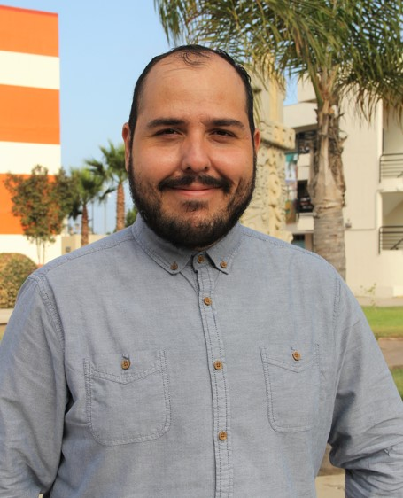
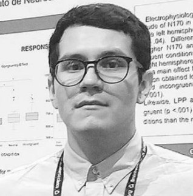
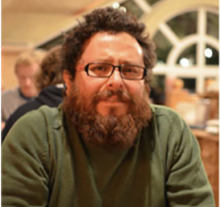

Colaboraciones
Red de investigadores e instituciones nacionales e internacionales con las que trabajo en conjunto para el desarrollo de proyectos científicos en el área de las ciencias cognitivas.
Dra. Natalia Arias Trejo
- Doctora en Psicología.
- Profesora de Tiempo Completo en la Universidad Nacional Autónoma de México (UNAM).
- Temas de interés: Adquisición del lenguaje, normas de asociación de palabras.
Dr. Anuenue Baker Kukona
- Doctor en Psicología.
- Profesor Titular en Psicología en la Universidad de Greenwich.
- Temas de interés: Cognición, lingüística y métodos cuantitativos.
Dr. Luis Ángel Llamas Alonso
- Doctor en Neurociencias de la Conducta.
- Profesor de Tiempo Completo en la Universidad Autónoma de Baja California (UABC).
- Temas de interés: Neurociencia cognitiva, neurociencia afectiva, psicología experimental.

Dr. Julio César Llamas Alonso
- Doctor en Psicología.
- Profesor Investigador de Tiempo Completo en la Universidad Autónoma del Estado de Hidalgo (UAEH).
- Temas de interés: Neurociencias, cognición, psicopatología, adicciones, memoria, creatividad.
Dr. Vladimir Huerta Chávez
- Doctor en Psicología.
- Miembro del Instituto de Neurociencias de la Universidad de Guadalajara (UdeG).
- Temas de interés: Emoción y cognición, ERPs y rastreo ocular (eye-tracking).

Dr. Kim Plunkett
- Doctor en Psicología Experimental.
- Profesor Emérito de Ciencias Cognitivas.
- Temas de interés: Reconocimiento de palabras, aprendizaje de palabras, desarrollo semántico y formación de categorías.
Prof. Bruno Lara
- Profesor.
- Laboratorio de Robótica Cognitiva, CInC, Universidad Autónoma del Estado de Morelos (UAEM).
- Temas de interés: Robótica cognitiva, así como el estudio y modelado de procesos predictivos, perceptuales, afectivos y atencionales en agentes biológicos y artificiales.

Dra. Alejandra Ciria
- Doctora en Ciencias.
- Investigadora Asociada (Tiempo Completo), Departamento de Ciencias de la Computación, IIMAS, UNAM.
- Temas de interés: Intersección entre la cognición corporizada, inteligencia artificial y robótica cognitiva; procesamiento de información multimodal y adaptación en sistemas biológicos y artificiales.